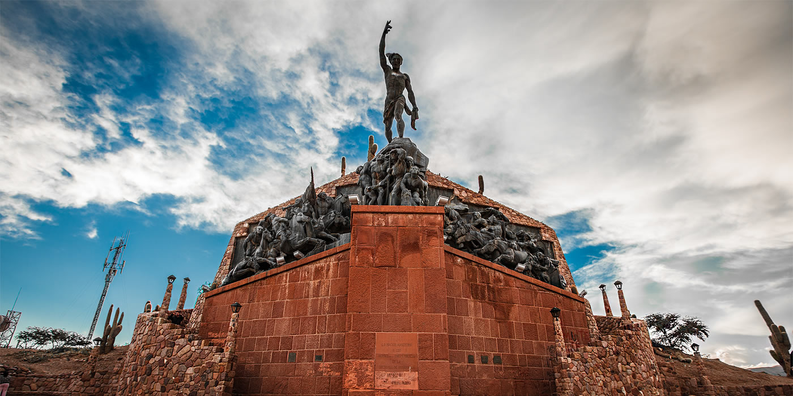
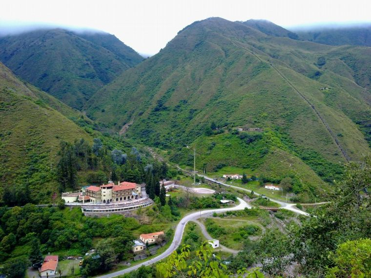
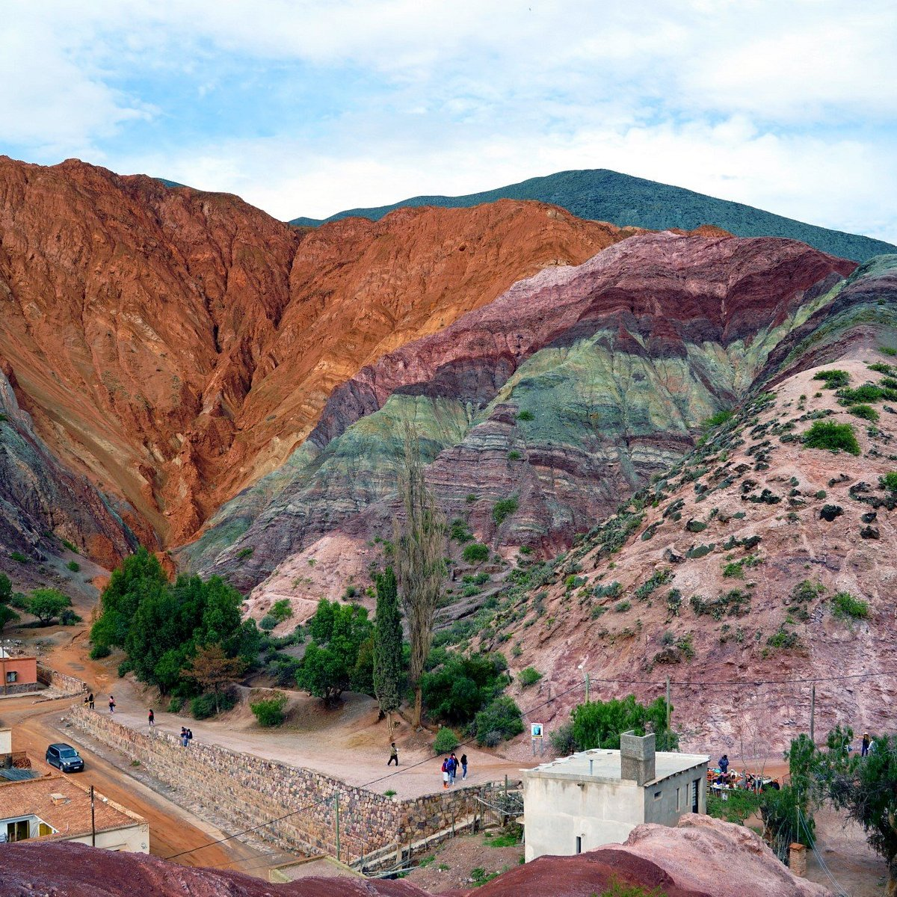

| Las salinas | Humahuaca | Terma De Reyes | Cerro de los 7 colores |  Las salinas grandes son un destino increible por su paisaje impactante, restos arqueologicos y propuestas aventuras. Son las terceras mas grandes del mundo. |
 Humahuaca es un lugar hermoso para ir estas vacaciones, ofrece muchas aventuras comoTrekking, montañismo, cabalgatas. Tambien posee muchos paisajes hermosos. |
 Termas de reyes es un sitio hermoso para ir y relajarse posees un balneario con aguas terminas perfecto para disfrutar, tambien posee muchas pistas para caminar por las montañas y fauna interesante. |
 El cerro de los 7 colores es un lugar hermoso que debes ir si vienes a jujuy, te permite disfrutar un paisaje hermoso, hacer caminatas de singular belleza, conocer gente local y aprender de la fauna y flora en el camino. |
|---|